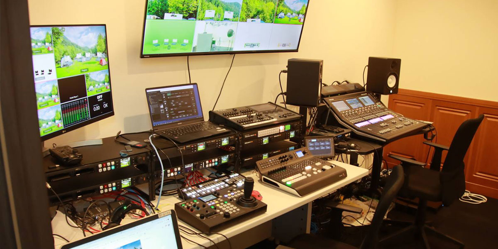
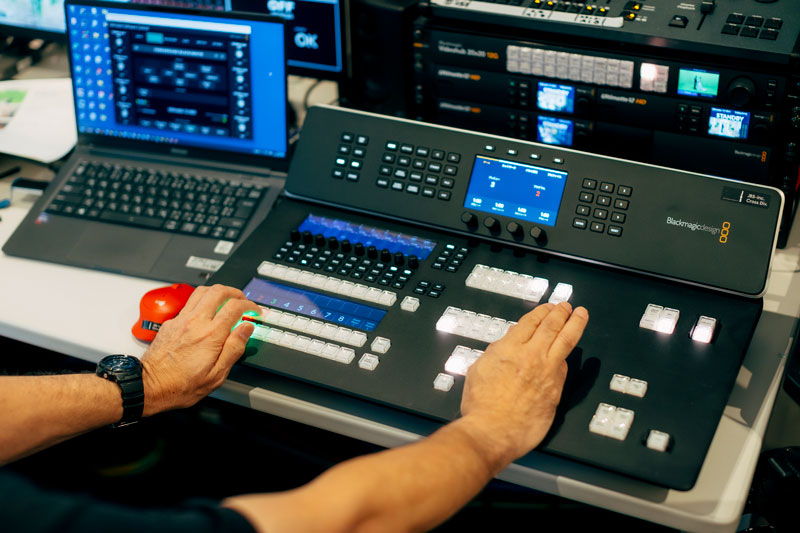

映像の印象は音で決まります。口元と音のズレ、環境ノイズ、残響の多さは視聴離脱の要因です。大阪市内のスタジオQは、数少ない完全防音スタジオとして、撮影と同時にクリアな音を収める同録スタジオの要件を満たし、編集効率と完成度を同時に高めます。
完全防音スタジオが同録に強い理由
外部ノイズを遮断する構造
道路騒音や空調音、隣室の足音などをシャットアウト。静寂を基準に設計された空間は、囁き声や繊細なニュアンスまで正確に収音します。後処理のノイズ除去に頼らないため、音質劣化がありません。
自然な響きを生む音響設計
天井高5m超、広さ22坪の余裕ある容積で、箱鳴りや反射をコントロール。過度なデッドでもライブでもなく、声が前に出る「可聴性重視」のチューニングです。マイク本来の特性が活き、EQやデノイズを最小限にできます。

天井高5m超、22坪の完全防音スタジオ
映像と音声を同時収録する運用体制
4カメ同時スイッチングでミスの少ない編集
固定・寄り・引き・サブの4台カメラを同期。スイッチャーでライブ切替しながら同時録画収音すれば、ポスプロの尺合わせや再同期の手間を大幅に削減できます。トーク番組、インタビュー、セミナーに最適です。

プロフェッショナルな4カメ同時スイッチングオペレーション
大型グリーンバック撮影とライブ配信
背景はグリーンバック撮影で自在に合成。ニュース風セットや企業ブランディング背景を即時適用できます。完全防音ゆえの安定した音声はライブ配信でも威力を発揮し、視聴体験と離脱率に直結する「聞きやすさ」を保証します。
同録スタジオを選ぶべき実務的メリット
編集時間の短縮とコスト最適化
収録段階でS/Nが高く、位相も安定。尺調整・ノイズ処理・アフレコ対応が減り、納期短縮＝コスト削減に直結します。制作本来の価値である企画・構成・演出に時間を振り向けられます。
ブランド価値を高める音質
社長メッセージ、採用動画、製品発表、セミナーアーカイブなど、音の明瞭さは信頼感と直結します。大阪エリアで安定的にプロ品質の同録を求めるなら、完全防音の選択が近道です。
主なご利用シーン（大阪の撮影ニーズに最適）
- インタビュー／対談番組：環境音の混入を防ぎ、編集いらずの聞きやすさ。
- セミナー／ウェビナー：長時間でも疲れにくい音質でアーカイブ価値を向上。
- 企業PR／採用動画：言葉の説得力を損なわず、ブランドメッセージを鮮明に。
- 音楽・朗読・ナレーション：演奏や声のニュアンスを豊かに再現。
スタジオQが提供する安心
機材とオペレーションの一体運用
コンデンサーマイクを中心に最適なマイキングを提案。カメラ・スイッチャー・レコーダーの同期を現場で統括し、撮影と収音の両輪を高精度に回します。テスト収録や音声チェックも短時間で実施可能です。
大阪で同録スタジオをお探しなら「スタジオQ」へ
完全防音環境、天井高5m超・22坪の空間、4カメ同時スイッチング、グリーンバック撮影──同録に必要な条件をワンストップでご提供します。まずは見学・下見録音から。「同録スタジオ」「完全防音スタジオ」「大阪 撮影スタジオ」でお探しの方は、スタジオQにご相談ください。